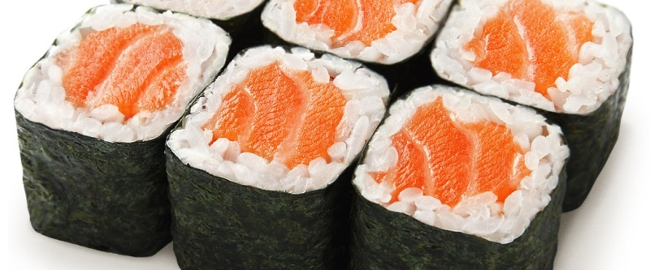

приготовление:
-
Заранее посолить красную рыбу. 1 ст.л. крупной морской соли на 0,5 кг. рыбы, солится день-два.
-
РИС: Рис для суши хорошо промыть, удалить все всплывшие или некрасивые рисинки, выложить в кастрюлю с толстым дном, залить водой из расчета 250 мл. воды на каждые 200 гр. риса, положить кусочек водорослей и убрать до закипания воды. Накрыть кастрюлю крышкой, включить средний огонь, довести до кипения, снизить нагрев до минимального, при слабом кипении поварить рис 10-15 мин до полного впитывания воды, убрать кастрюлю с плиты, не открывая крышку оставить еще на 10-15 мин. На 450 г готового риса взять 2 ст.л. рисового уксуса и по 1 ч.л. сахара и соли. Соль и сахар всыпать в рисовый уксус и нагреть смесь до полного их растворения, помешивая, на среднем огне. Готовой заправкой сбрызнуть рис, слегка перемешивая его деревянной ложкой.
-
СБОРКА: лист водорослей положить на фольгу или деревянный мат, мокрыми руками брать рис и выложить давольно тонким слоем на лист, с одной стороны 2 см. листа оставить без риса. На противоположную сторону листа положить кусочки красной рыбы и сыр филадельфия. Аккуратно скатать в ролл от стороны с начинкой к стороне без риса (открытый кусочек листа смазать водой и прикрепить к роллу, чтобы не раскручивался). Нарезать мокрым ножом, подавать с кисло-сладким соусом.